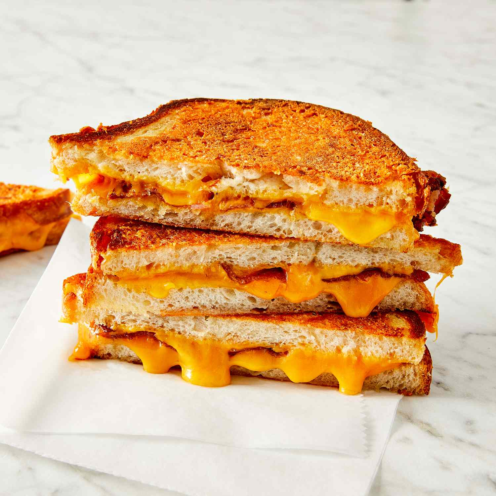

Grilled Cheese Recipe

Description
This easy grilled cheese sandwich has a crispy Parmesan
crust and a gooey Cheddar and bacon filling, and is
simply the best I've ever had! As far as grilled cheese
goes, this is it!
Ingredients
- Butter
- Parmigiano-Reggiano cheese grated
- Bacon
- Cheddar cheese
- Sourdough bread
How To
- In a small bowl, mash together the butter and Parmesan cheese until evenly blended. Make sandwiches by placing two slices of bacon and one slice of Cheddar cheese on half of the bread slices. Top with the remaining slices of bread.
- Heat a large skillet over medium heat. Spread some of the butter mixture on the top of each sandwich. Place sandwiches butter side down in the skillet. Spread the remaining butter mixture on the other sides. Cook until golden brown on each side, about 3 minutes per side. To serve, cut in half diagonally.
back